팝업
애타는 마음과 따뜻한 손길이 모여
기적 같은 재회와 행복한 입양을 만듭니다
길 잃은 생명에게 따뜻한 손길을 건네고
행복한 반려의 기쁨을 함께 공유하세요
실종, 구조, 입양부터 유익한 반려 지식과
따뜻한 소통까지 모두 나누는 곳
잃어버린 마음을 찾습니다
잃어버린 반려동물을 찾습니다
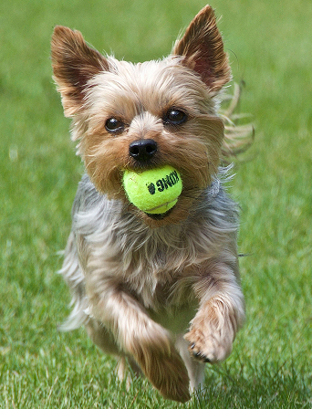
- 실종장소 서울 용산구 이태원
- 실종날짜 2026-03-01
- 품종 요키, 암컷, 7개월, 3kg
- 특징 베이지, 검은색 섞인 털, 겁이 많음
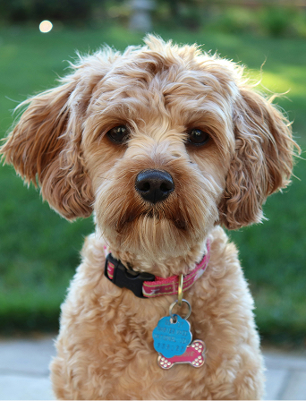
- 실종장소 전북 전주시 평화동 주공 5단지
- 실종날짜 2026-02-12
- 품종 푸들, 암컷, 중성화 O
- 특징 코 위에 점, 입에서 냄새남
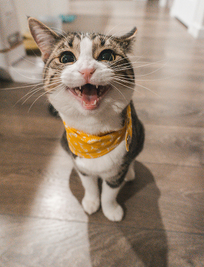
- 실종장소 대구 바르미스시뷔페두산점 야외주차장
- 실종날짜 2026-01-23
- 품종 코리안쇼트헤어, 수컷, 중성화 O
- 특징 고등어 무늬, 핑크 코, 온순함
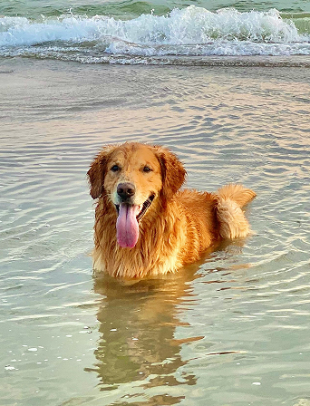
- 실종장소 경남 남해군 도마초등학교 인근
- 실종날짜 2025-12-03
- 품종 골든 리트리버, 수컷 , 6세
- 특징 카키색 목줄, 메달 목걸이 착용
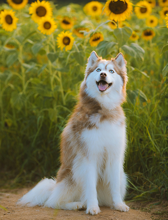
- 실종장소 청주시 상당구 성안길부근
- 실종날짜 2025-12-01
- 품종 허스키, 수컷, 중성화 O
- 특징 털 색이 브라운 컬러를 띔
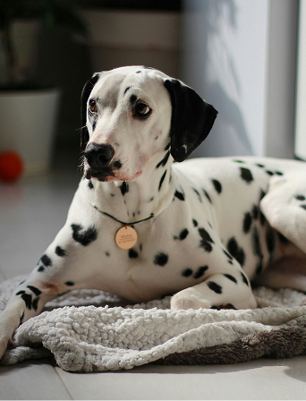
- 실종장소 서울시 용산구 이태원 거리
- 실종날짜 2025-11-30
- 품종 달마시안, 암컷, 중성화 O
- 특징 다리가 굉장히 길고 빠름
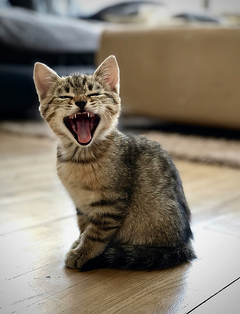
- 실종장소 울산 방어진 초등학교 부근
- 실종날짜 2025-11-24
- 품종 코리안쇼트헤어, 5개월, 중성화 X
- 특징 털에 무늬가 호랑이 같음
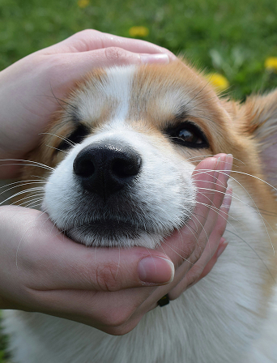
- 실종장소 안산 고잔25시 광장
- 실종날짜 2025-10-13
- 품종 웰시코기, 10개월, 중성화 O
- 특징 눈 위에 까만 점이 있고 귀염상임
떠도는 동물의 가족을 찾습니다
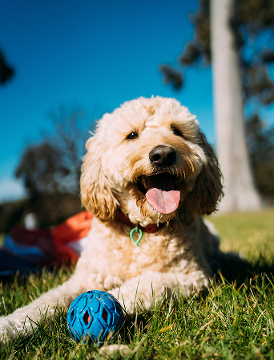
- 발견장소 서울 서초구 태봉로 근처
- 발견날짜 2026-03-01
- 품종 골든두들, 수컷, 2세, 25kg
- 특징 리트리버보단 푸들에 가까움
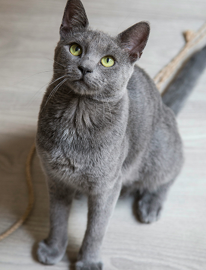
- 발견장소 대구 달서구 벤디시온 주차장
- 발견날짜 2026-02-11
- 품종 러시안블루, 암컷, 중성화 O
- 특징 눈동자 초록색, 꼬리가 김
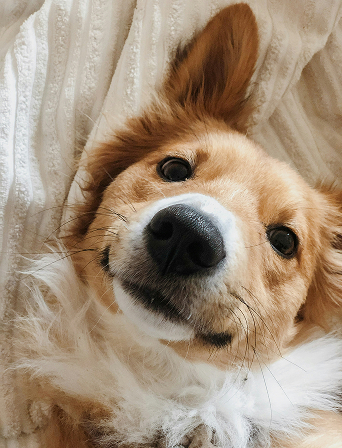
- 발견장소 서울 보라매역 부근
- 발견날짜 2026-02-06
- 품종 셰틀랜드 쉽독 , 수컷, 중성화 O
- 특징 사람을 좋아하는 순한 아이
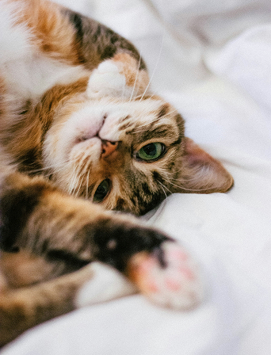
- 발견장소 경남 창원시 성산구 안민중학교
- 발견날짜 2025-12-03
- 품종 코리안쇼트헤어, 암컷 , 중성화 O
- 특징 삼색 털, 눈이 올리브 색임
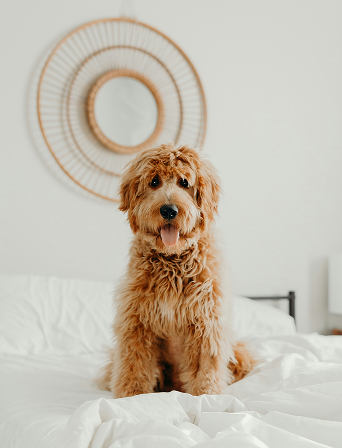
- 발견장소 울산 삼산동 업스퀘어 부근
- 발견날짜 2025-12-02
- 품종 삽살개 믹스, 수컷, 중성화 O
- 특징 눈, 코가 까맣고 가슴에 흰털이 있음
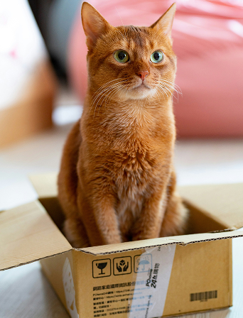
- 발견장소 청주 분평동 남성중학교 앞
- 발견날짜 2025-11-28
- 품종 아비시니안, 암컷, 중성화 O
- 특징 애교가 많고 코가 진한 핑크색임
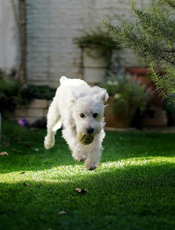
- 발견장소 울산 일산지 사거리
- 발견날짜 2025-11-15
- 품종 말티푸, 2살, 중성화 0
- 특징 다리가 길고 점프를 잘함
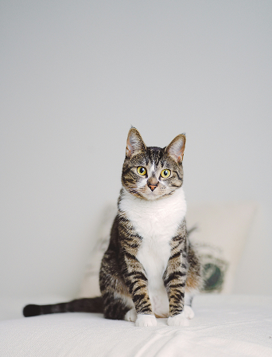
- 발견장소 안산 와동체육관 앞
- 발견날짜 2025-10-17
- 품종 코리안쇼트헤어, 7살, 중성화 O
- 특징 앞다리 무늬가 강렬하고 가슴은 흰색털임
당신을 기다립니다
DON’T BUY.ADOPT. DON’T BUY.ADOPT. DON’T BUY.ADOPT. DON’T BUY.ADOPT. DON’T BUY.ADOPT. DON’T BUY.ADOPT. DON’T BUY.ADOPT. DON’T BUY.ADOPT.